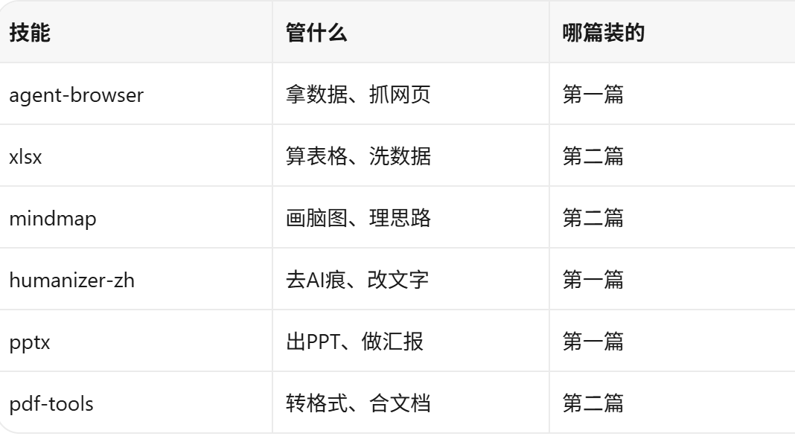
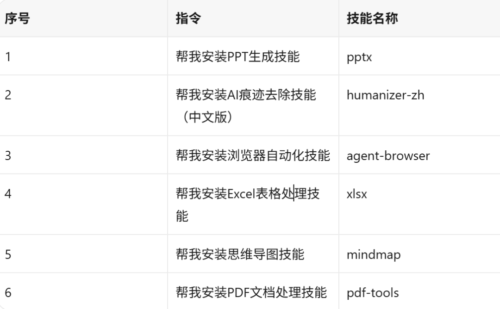

前两篇聊了六个Skill，有的读者已经全装了，私信问我：装是装了，但一个个用感觉还是碎片化的，有没有办法串起来？
有。这篇就聊这个。
我把六个Skill在实际工作中怎么串着用，写了三个完整场景。不是编的，是我这两个月真实在跑的流程，有些已经完全不用人盯着了。
先说清楚六个Skill分别干什么，方便后面对照：

场景一：周报全自动流水线
这个是我最先跑通的，因为周报这东西太规律了，每周都一样，最适合自动化。
以前写周报的流程：打开各个系统看数据，手动记下来，整理到表格里，画个趋势图，写分析文字，排版成文档，如果有月度汇报还得做成PPT。一整套下来半天没了。
现在的流程是这样的：
周一早上8:00，agent-browser自动启动（用的是WorkBuddy的自动化功能），登录后台系统，把上周的运营数据抓下来——UV、PV、转化率、各渠道占比，存成一个Excel文件丢在桌面上。
8:05左右，xlsx接手，自动处理这个文件：去掉空行和重复数据，算环比同比，标出变化超过20%的异常项，按渠道出柱状图，按日期出折线图。处理完另存一份"周报数据_本周.xlsx"。
到这里我还没起床。
到了公司之后，我打开WorkBuddy，让它基于处理好的数据写周报正文。指令大概是这样的：
读取桌面上"周报数据_本周.xlsx"的数据，写一份周报，包括：本周数据概览、各渠道表现分析、异常波动说明、下周建议。语气简洁，重点突出。
正文初稿两三分钟出来。但这是AI写的，直接发不行。
接着上humanizer-zh。我把初稿扔进去，说"去除AI痕迹，保留数据和分析逻辑"。它会逐段调整措辞，去掉那些"值得注意的是""综上所述""不仅...更..."之类的AI腔调，改成正常人写周报的语气。
改完之后我自己再过一遍，改几个数字描述和结论措辞——这一步大概五到十分钟。
如果这周要汇报，再把定稿扔给pptx："把这份周报做成8页PPT，数据用图表展示，风格简洁。"
最后，如果有其他部门的材料要一起交，用pdf-tools把PPT导成PDF，跟其他文档合并成一个文件。
整个流程：agent-browser抓数据（自动）→ xlsx处理数据（自动）→ WorkBuddy写初稿（2分钟）→ humanizer-zh去痕迹（1分钟）→ 我手动微调（10分钟）→ pptx出PPT（5分钟）→ pdf-tools合并文档（1分钟）。
我实际花的时间：十五到二十分钟。以前是半天。
场景二：竞品分析报告
这个不是定时的，是临时任务。但流程跑通之后也很省事。
领导说"帮我看看XX竞品最近在干什么"，以前这种活儿得折腾一两天。现在的做法：
第一步，agent-browser上场。 让它去抓竞品官网的最新动态、产品更新页面、招聘信息（能看出他们在扩什么团队）、应用商店评分和评论。五个来源，自动抓，整理成一个文档。
抓取以下页面的最新内容，整理成文档：
竞品官网"最新动态"页面
竞品产品更新日志页面
竞品招聘页面（看岗位方向）
应用商店竞品页面（评分+近期评论）
竞品公众号最近10篇文章标题
抓完大概十分钟，信息量不小，原始数据乱七八糟的。
第二步，xlsx整理数据。 把应用商店评论导出来做情感分析统计，把招聘信息按岗位类型分类计数，做成表格。这一步让xlsx自动跑就行。
把应用商店评论按星级分类统计，把招聘信息按岗位类型分组计数，输出表格。
第三步，mindmap画结构。 这是整个流程里我觉得最值的一步。把抓到的所有信息扔进去，让它画一张竞品全景脑图——产品线、近期动作、团队扩张方向、用户口碑，一张图看全。
把以下竞品信息整理成思维导图，按"产品动态/团队扩张/用户口碑/内容策略"四个分支组织：[粘贴所有抓取数据]
这张图出来之后，竞品在干什么一目了然。我上次做竞品分析的时候，这张图领导看了直接说"比之前那些报告清楚多了"。
第四步，WorkBuddy写分析报告。 基于脑图和数据写正文。这一步出来的肯定是AI味儿比较重的初稿。
第五步，humanizer-zh过一遍。 去痕迹，改成正常分析报告的语气。
第六步，如果有图表和截图需要放进报告，pdf-tools帮忙处理格式。 把截图整理进文档，转成PDF交付。
整个流程：抓数据10分钟 + 处理数据3分钟 + 画脑图1分钟 + 写初稿3分钟 + 去痕迹1分钟 + 格式处理2分钟。总共二十分钟出头。
我手动参与的部分：写指令、看脑图调整分支、改报告措辞。大概花十五分钟。
以前做竞品分析，光是一个个网页翻信息就得半天，还不一定抓全。
场景三：内容选题到发布
这个跟第一篇里提到的"内容生产线"类似，但做了升级，加了后两个Skill。
选题阶段。 agent-browser定时抓五个内容平台的热搜和热门话题，每天早上自动跑，存成一个文件。我到了公司扫一眼，挑一两个有意思的。
构思阶段。 把选中的话题扔给mindmap，让它画一张选题脑图——可以从哪些角度写、目标读者是谁、跟之前的内容怎么联动、有什么延展方向。这张图帮我把思路理清楚，不用对着空白文档发呆。
写作阶段。 WorkBuddy基于脑图的结构写初稿。这一步出来的东西AI味儿重，但框架和素材是到位的。
去痕阶段。 humanizer-zh上场，逐段改写。改完我自己再过一遍，加一些个人观点和实际经历——这一步AI替不了，因为读者关注的是"你的看法"，不是"一个正确但无聊的分析"。
配图阶段。 需要数据图表的让xlsx出图，需要流程图的让mindmap出图，WorkBuddy本体负责其他配图。
排版阶段。 如果要发到多个平台，用pdf-tools把内容转成不同格式——公众号直接粘贴，知乎可以导PDF附件，有些平台要特定排版。
从选题到发布，快的半小时，慢的四五十分钟。其中我实际动手的时间大概是十五到二十分钟，剩下都是Skill在跑。
六个Skill的分工逻辑
用多了之后我发现，这六个Skill其实可以分成三类：
拿数据的：agent-browser。负责从外部世界获取信息——网页、系统、平台，什么都行。
处理数据的：xlsx、mindmap。一个处理数字，一个处理结构。数字变成表格和图表，文字变成脑图和流程图。
输出成果的：pptx、humanizer-zh、pdf-tools。一个出演示文稿，一个改文字，一个处理文档格式。
工作流基本就是：拿数据 → 处理数据 → 输出成果。每个环节都有对应的Skill，串起来就是一条完整的生产线。
当然不是每个任务都需要六个全上。简单的活儿用两三个就够了，复杂的可以全链路跑。关键是装好之后，需要哪个调哪个，不用再临时找工具。
一些实操经验
用了两个多月，踩了一些坑，分享几个经验：
自动化任务别一口气设太多。 我一开始设了五六个定时任务，结果有时候几个任务同时跑，浏览器打架，agent-browser会卡。后来改成错峰执行——8:00抓数据，8:05处理表格，8:10写初稿，给每个步骤留点缓冲。跑稳了之后就没再出问题。
xlsx处理大数据之前先描述清楚规则。 别只说"帮我处理这个表"，要说清楚去不去重复、异常值怎么定义、哪些列要算哪些不算。描述越细，出来的东西越靠谱，不用反复改。
humanizer-zh改完一定要自己再读一遍。 它去AI痕迹去得挺狠，有时候会把正常的表达也改掉。比如"数据显示"这种词其实是正常用语，但有时候它也会改。人工过一遍把改过头的地方调回来就行。
mindmap出来的图可以当大纲用。 写长文之前先让它出一张脑图，比直接写省事很多。结构想清楚了，填内容就快了。
pdf-tools转格式之后检查一下表格和图片。 大部分时候没问题，偶尔遇到特别复杂的排版会有小错位。花一分钟扫一眼比交上去发现问题强。
关于安装
如果前两篇还没看的，六个Skill的安装指令放这里，挨个发给WorkBuddy就行：

六条发完，两分钟左右全部装好。
写到这里，三篇就收尾了。
第一篇聊了三个基础Skill——出PPT、去AI痕、抓数据。
第二篇加了三个进阶Skill——搞表格、画脑图、弄PDF。
这篇把六个串起来，跑了三个完整场景。
我自己用下来的感受是：单个Skill已经能省不少事，但真正改变工作方式的是把它们串起来。以前一个任务要在五六个工具之间来回切换，现在大部分流程在WorkBuddy里走完，中间需要人参与的地方越来越少。
不是说AI能完全替代人——至少目前不能。分析的角度、判断的结论、对业务的理解，这些还是得人来。但那些重复的、机械的、耗时间但不创造价值的环节，确实可以交给Skill跑。
省下来的时间拿来干嘛？我拿来多喝了几天下午茶。你们自己看着办。